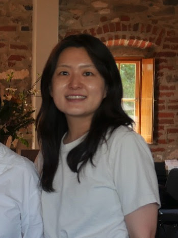

I am a Ph.D. student in Management Information Systems at the Fox School of Business, Temple University.
My research interests lie in Cybersecurity, Human-Technology Interaction, and Privacy Enhancing Technologies. I am broadly interested in how individuals perceive and respond to digital threats and privacy risks, and how the design of AI-mediated systems shapes user behavior and trust.
Prior to my doctoral studies, I received my M.S. in Business and Technology Management from KAIST (2023) and my B.S. in PR & Advertising from Sookmyung Women's University (2016).
Fox School of Business, Temple University · Philadelphia, PA
DoctoralCollege of Business, KAIST · Daejeon, South Korea
Master'sSookmyung Women's University · Seoul, South Korea
Undergraduate32nd Americas Conference on Information Systems (AMCIS)
Statistical Challenges in Electronic Commerce Research (SCECR)
31st Americas Conference on Information Systems (AMCIS)
Top 25% Paper · SIG HCI (Human-Computer Interaction)
Production and Operations Management Society (POMS)
Conference PaperTemple University
Temple University
Seoul, South Korea
Seoul, South Korea
Examines how varying levels of anthropomorphic realism in AI agents affect user behavior during IT support interactions, distinguishing between surface-level and interpretive ambiguity cues.
Investigates how different explanation types in personalized recommendation systems affect users' privacy concerns, using eye-tracking methodology to capture behavioral responses.
Employs physiological and eye-tracking measures to quantify users' emotional responses to phishing email attempts, contributing to our understanding of cybersecurity threat perception.